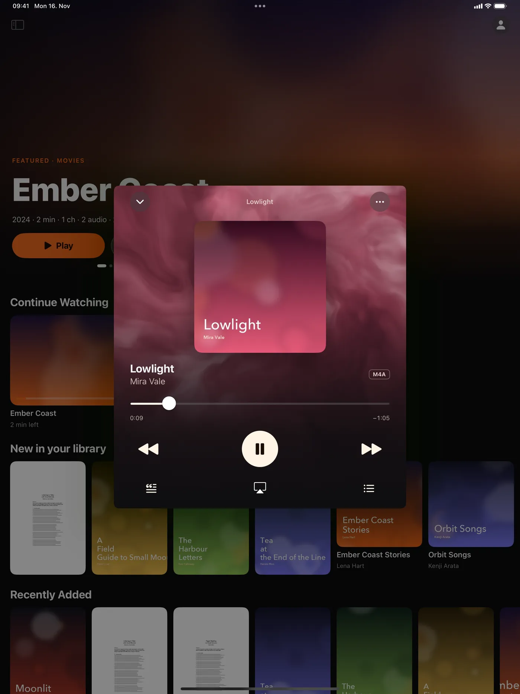
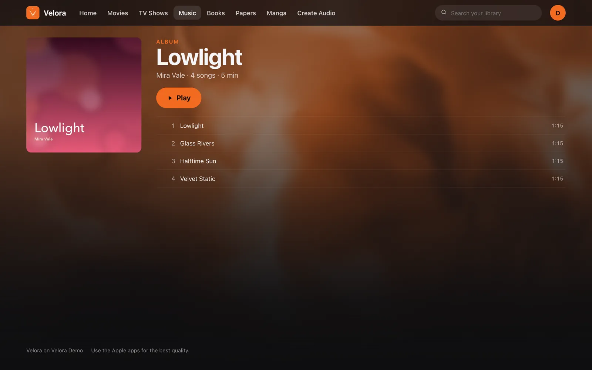
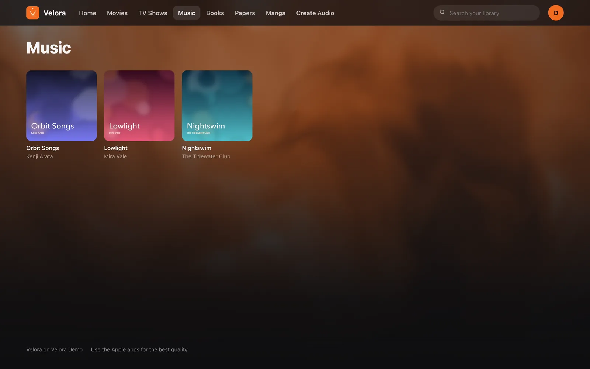
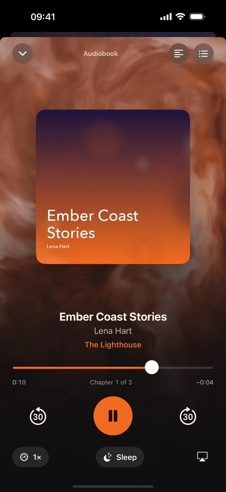
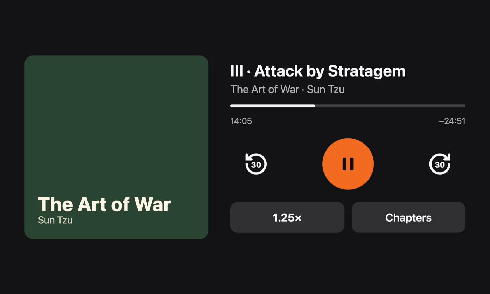

Music and audiobooks, beautifully.
Your own music collection with synced lyrics, a Now Playing that moves with the music, and audiobooks with everything an audiobook player needs.
It moves with the music.
A full-screen liquid smoke takes its colours from the album cover and reacts to the sound, calmer behind lyrics. One cover glides between artwork, lyrics and the queue, and Velora remembers which one you used last.
- Synced lyrics from .lrc files next to your songs, or embedded lyrics
- Queue, shuffle, repeat and AirPlay
- Lock Screen, Control Center and Dynamic Island controls


Pins, playlists and albums.
Pin the albums, artists and playlists you come back to on the Music home. Every account has its own playlists, with a custom cover if you like. Album pages list every disc and track correctly, and the cover shrinks into the corner as you scroll.
- The Music and Audiobooks switch appears only when you have both
- Multi-disc albums use the album name, never “Disc 2”
- Album art from the folder, the file, or online if you allow it


Made for long listens.
A dedicated audiobook player with chapters, 30-second skips, playback speed and a sleep timer. Audiobooks made with Create Audio have a timed transcript you can read along with.
- M4B chapters, or one file per chapter
- Progress synced across every device
- CarPlay with big, simple controls (waiting for Apple's approval)

